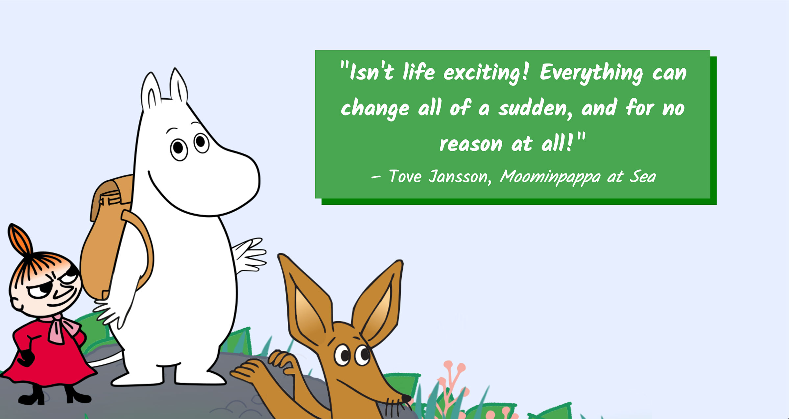

|
| A collection of buttons for various brands, combining concept design with CSS. |
 |
| A recipe page with style and format optimized for mobile devices. |
|  |
| A triptych of responsive digital postcards with quotes from Tove Jansson's Moomin works. |
 |
| A themed website designed in partnership with a creative director (classmate). |